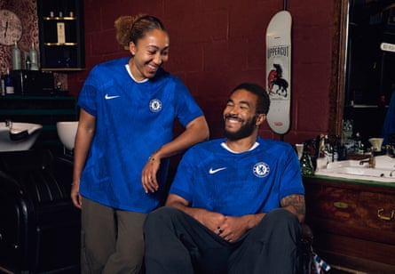
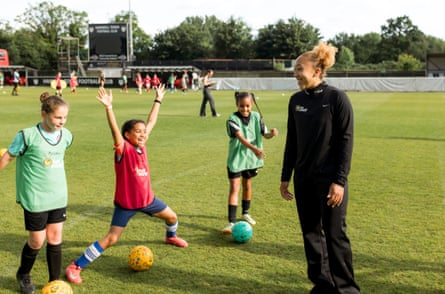
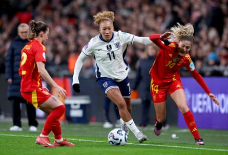

‘I think it was in me from when I was young,” says Lauren James of the fierce competitive drive that has taken her from playing football with her brothers, Josh and Reece, in a park behind their house in Mortlake, south-west London, to England’s opening match of Euro 2025 against France in Zurich on 5 July. The 23-year-old returns from injury as the most likely catalyst for England’s hopes of remaining European champions because she has the skill and tenacity to be one of the tournament’s standout players.
“It helped playing with my brothers all the time,” James says as she reflects on a footballing journey when her prodigious talent has blossomed with Chelsea and England while being tested by insidious abuse and racism. We need two interviews to get a little closer to the tangled heart of her story, but her natural reticence and reluctance to open up deserves respect.
Lauren and Reece James are the first sister and brother to play international football for England and their free-flowing games in the rainy or sunlit park, with Josh and other boys from their neighbourhood, provided the bedrock for her career. She was always the only girl, fighting for the ball before dribbling away on mazy runs, dreaming she was Eden Hazard, while the older boys tried to stop her.
A little smile crosses her face when I ask whether her fire was forged in those park games which were as joyous as they were tough. “Yes and sometimes it’s your only option because they’re stronger and quicker than you so your only chance is to be better on the ball. They never went easy on me because they never wanted me to beat them. It was always hard against them.”
James started playing seriously when she was “five or six” and believes that those Mortlake days shaped her: “I’d say so because being able to protect the ball obviously helped.”
She was fortunate to come from a close-knit family with her parents, Nigel and Emma, pouring so much into their football-crazy children. Her dad is a gifted coach and more than two dozen players have become professional footballers after being guided by him at the Nigel James Elite Coaching academy in Wimbledon.
His philosophy, evident in his daughter’s play, is highlighted on his website: “The Nigel James Elite Coaching programme is about pure ball mastery and delivery with panache, to ultimately create elite technicians of the game.”
Lauren James with her brother Reece at the 2025-26 Chelsea kit launch.Photograph: CFC/Getty Images
Emma, a nurse for the NHS, spent hours ferrying the kids to and from training and matches. Josh and Reece joined the academies at Fulham and Chelsea and Lauren would be taken to their sessions where, while kicking a ball around on the touchline, her startling gifts were noticed.
She began training with Chelsea’s under-10 girls’ team when she was six and at 13 she was signed by Arsenal. As Reece remembered a few years ago: “Me and Lauren played in a number of tournaments together in the same team. We won a lot of tournaments together and it was great playing with her.”
James can recall only one tournament with Reece and one or two playing with Conor Gallagher and Jacob Maddox, both future professionals. She shrugs when I ask whether Gallagher, the Atlético Madrid midfielder who has won 21 caps for England, stood out. “When everyone’s young you don’t really notice as much.”
Did she face sexism? “Not when I was younger. It was maybe there when I went to Arsenal and trained at the boys’ academy. It took a few sessions because at first they were like: ‘There’s a girl with us.’ But when they got to realise what I could do, they accepted me.”
Her years at Arsenal were difficult and in 2023 Nigel spoke in detail to The Beautiful Game podcast : “She was too good to train with the Arsenal girls when she first went in … so Pedro [Martínez Losa], the manager at the time, brought her in to train with the women.
“Your 14-year-old daughter is now training with women who are 35, 28, grown women. People would see this little girl. Some could take it and put their arm around her and some would say: ‘You shouldn’t be here. You should be at school.’
“There was a game [where] the manager let her take a penalty. The next day senior players didn’t like it and they asked for her to be removed from the first-team squad and to go back into the academy.
“They came up with a solution that she train with the Arsenal academy boys … it was a big thing because it had never happened before – a girl training with the boys – and some parents didn’t like it. But she was superb.”
Lauren James takes part at a McDonald’s Fun Football grassroots event.Photograph: Bumblebee Photography
Our first interview is at Hanwell Town FC during a McDonald’s Fun Football grassroots programme of free sessions for five to 11-year-olds. “It’s nice to see so many girls playing football on a big pitch,” James says. “With this summer at the Euros, hopefully we can inspire more to play football.”
Her presence, both as a brilliant footballer and a young mixed-race woman, clearly inspires the girls from diverse backgrounds who look up to her in Hanwell. But, in an empty dressing room after the session, I ask whether she had felt lonely as a girl playing first-team football with women: “I wouldn’t say lonely. We just didn’t really have much in common … I was just burning to train.”
Casey Stoney, who won 130 caps for England, played with James at Arsenal and had been floored by the teenager’s technical ability and strength. In 2018, as Manchester United’s manager, Stoney signed the 16-year-old. “She took me to United and took care of me,” James says. “It was difficult, at the start but I got used to it and in our first season we won the Championship [and promotion to the WSL]. I scored quite a few goals.”
James scored 22 goals in 40 league games for United between 2018 and 2021, but her success was already shadowed by racism. In February 2021, she wrote a powerful article in the Daily Telegraph that began: “I’m 19-years-old and I’m sitting here, writing about racist abuse. It is mad. All because of the colour of my skin. I’m proud of my skin, I love my skin colour. But when I saw the comments on my Instagram feed, it hurt.”
She added: “Racism doesn’t just exist online, of course. It can be in the everyday things – even just going to the supermarket. There are times I’ve been to get my shopping and you get that feeling that people are intimidated by your presence. They’ll move away, pull their children in closer or just look at you in a certain way. It’s difficult to talk about.”
It is even more difficult for James to discuss now because of the extreme racism she suffered online after she was sent off while playing for England against Nigeria in the 2023 World Cup. James had lit up the tournament in the group stages, but all her shimmering virtuosity was swamped by horrendous vitriol.
Lauren James powers past Laia Aleixandri during England’s Nations League match against Spain this year.Photograph: Allstar/Getty Images
James, understandably, refuses to discuss her World Cup dismissal. But I ask whether she found it difficult to speak out against racism at 19? “Yeah, but it needed to happen.” Has that abuse lessened? “No. I don’t think it gets better … [but] you always live in hope.”
James loves playing football, rather than doing interviews, but she still sees value in talking “because it might help the next girl who’s going to be in my position”. She also helps others from diverse backgrounds through her scholarship which in its first year has supported five young girls in London.
In our second interview, I ask her what could be done to curb the abuse that she and so many other young women encounter. “Have a break from social media because I don’t think it will go away. Maybe it will die down a bit but, if it won’t, then leave.”
It seems wrong the victim should have to disappear. Surely we can all do more to put pressure on social media companies to sanction those who abuse others? “You have those little things on apps where you can report this. But not much gets done. They should take the reports more seriously.”
James can sweep aside the negativity through her imperious presence on the pitch. Despite an injury-affected season, her workrate and tracking back have improved dramatically and added a considerable new dimension to her game.
Has Sonia Bompastor , who replaced Emma Hayes as manager before Chelsea’s treble-winning campaign , been instrumental in this development? “She’s added more intensity to us. We have to press a lot more and use a different style of play. She’s added more to my game when I don’t have the ball.”
Did James feel some trepidation when Hayes , who had been so influential, left Chelsea to take over the US national team? “It was hard at first but I got used to it and now I’m cool. Emma left Sonia with a top team and she built that winning culture Chelsea are known for. But Sonia is one of the most competitive people I’ve come across. It’s not just about football – whatever it is, she wants to beat you. That gets passed down in the dressing room and in training – always thinking about the next thing we can win.”

Lauren James stands in an ice bath during an England training and recovery session.Photograph: Harriet Lander/FA/Getty Images
James points out that Chelsea winning the WSL six times in a row “is quite amazing” but the need to conquer Europe remains. A hamstring injury meant she missed Chelsea’s humiliation against Barcelona in the Champions League semi-final. “I want to be playing, especially in the big games, so it was hard to watch. The 8-2 [aggregate score] makes it sound ridiculous, but we got chances. The difference is they put theirs away. We have just got to keep working and believing in ourselves.”
How else has Bompastor improved James as a player? “She’s pushed me because she’s quite demanding. She always wants more which helps you to be better.” Does she like being pushed? “Yes,” James says instantly. She is equally clear when asked whether she targets individual awards such as the Ballon d’Or Féminin. “For sure. You always want to help your team and help them win things, because that plays a part in you winning these individual trophies. That’s certainly one of my aims … hopefully injuries and form help me to stay on track.”
James always thought she would overcome her hamstring problem in time for the Euros. “The moment you have doubts, you’re putting stress on your body. You need the belief that you’ll make it and be fit. I also looked at the timing and thought: ‘Oh, it’s still a while away.’ That also gave me belief.”
The Euros are close now and James’s importance to England is accentuated by the surprise absence of the vastly experienced Millie Bright , Fran Kirby and Mary Earps . Did Bright, her Chelsea captain, tell James of her need to step away from the pressures of football? “No, I had no clue. I think everyone is different. Sometimes people may be silent and no one knows what’s going on.”
James was a spectator when England beat Germany so memorably in the 2022 European final at Wembley. “It’s not really about defending a title because it’s a completely different team,” she says of England’s squad in Switzerland. “This team’s got a lot of youth in it and this will be some people’s first big tournament.”
She also describes “a fresh start, a bit like a new era” and “hungry girls wanting to do well”. Can England win the Euros? “I hope so. We’ll just take it game by game and hopefully have momentum and the belief of the fans and everyone in the country behind us.”
There is just time to think once more of those Mortlake days and the blistering games she played with her brothers. Her parents will be in Switzerland to support her, but will Josh and Reece also be watching their little sister? She grins: “I’d like to think so.”
They could be in for a treat because, despite the adversity and personal challenges, James is emphatic when asked what she needs to do next to fulfil her potential: “Keep improving, scoring, helping the team and winning competitions.”